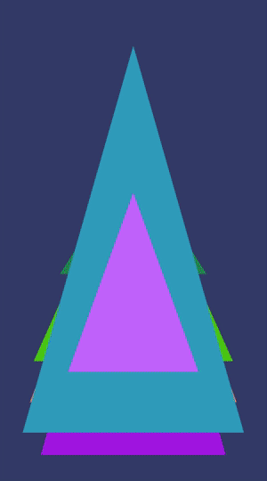

android developer & creative technologist
I make digital tools for creative expression.
veeZine lets you record 10 second videos and apply quirky filters over it. Current version supports filters that respond to audio. veeZine works as a great complementary app to create stylish videos for Instagram Stories.
- HandlerThread to record audio
- Custom MediaCodec implementation for Audio Encoder
- OpenGLES to apply RealTime filters


Click to Launch a 10 second timer and record video

Tap on Text to change Font and Long Press to change color
Fling on Text to change font alignment
2. Alone With My Phone

Alone with my Phone is a first person audio story that you participate in using your smartphone. The companion app reveals characters and their voices to you as you physically move from one place to the other. It is a story about the character's reliance on technology to initiate contact with humans and the disappointments that come with it.
Technical Details
I used the Places API to randomly select 3 places around you. Using Geofences enable users to experience different characters of the story depending on their location. Using the orientation class the user is able to perform certain gestures with the phone to trigger the character's voice.
Do Androids Dream of Me?
an instagram log of my experiments with android.
3. Dhish
Dhish is a wearable music instrument. It aims to capture familiar percussive gestures of the hands like clapping and snapping and associate new sounds to them. Dhish was built with the the intention to create an electronic music instrument that isn't intimidating and is easy to pick up for amateur musicians.
4. Dhvani
Dhvani is a tabletop touch based interface to create electronic music. It was inspired by the Reactable project to create it. When Reactable was released it was way above my budget, which motivated me to create a low-fi version of it.
on the internet you can find me here, here and here